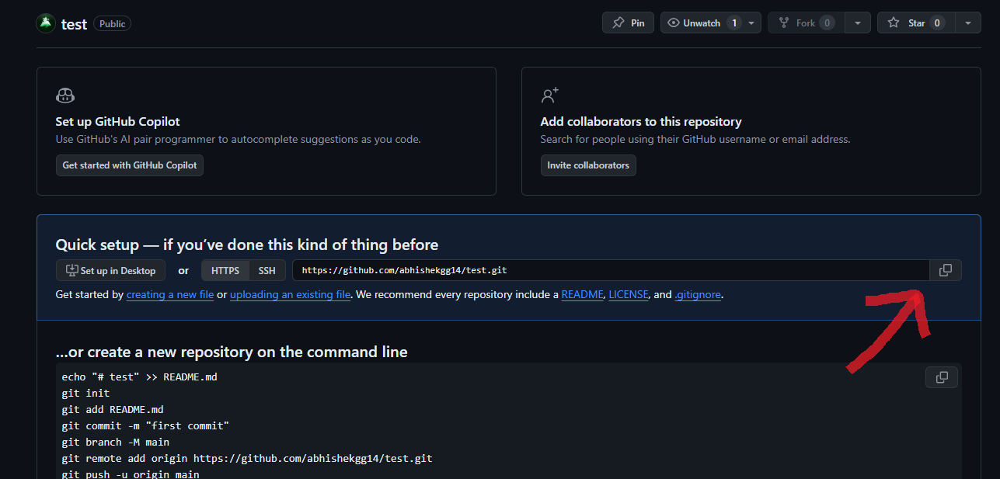

- Steps to configure git for first time:
- git config --global user.email "emailID"
- git config --global user.name "name"
git --version : To check the verion fo the git installed in the system.
git init : It is used to initialize a new Git repository. This command creates a hidden .git directory in the current directory, which contains all the necessary metadata for the repository, such as configuration files, commit history, and branches.
git status : Command displays the state of the working directory and the staging area in a Git repository. It provides information about which changes have been staged, which haven't, and which files aren't being tracked by Git.
git add index.html : (index.html is an example) Command is used to add the specified file, in this example "index.html", to the staging area in a Git repository. This action tells Git that you want to include this file's current changes in the next commit. "git add ." command can be used to stage all changes in the current directory and its subdirectories in a Git repository.
- git commit -m "message" : Used to create a new commit with a descriptive message in a Git repository. A commit is a snapshot of the changes in the staging area and represents a point in the project's history. By using the -m option, you can provide a brief message directly in the command line that summarizes the changes being committed.
git remote add origin (paste link) : Command is used to add a remote repository to your local Git repository. This is typically done to connect your local repository to a remote server, such as GitHub.

- git push -u origin main : This command pushes the main branch to the origin remote and sets it up so that future pushes and pulls will default to origin/main. If you’re pushing a branch that doesn’t exist on the remote yet, it will be created.
If you just use git push without '-u', you need to specify the branch name each time if it hasn’t been set up previously.
git log : This command displays a chronological list of commits in the current branch of a Git repository. It shows information about each commit, including the commit hash, author, date, and commit message. This command helps you review the commit history and understand the changes made over time.
Git branching allows you to diverge from the main line of development and continue to work independently on a separate line. It helps you manage multiple features, fixes, or experiments simultaneously within the same repository. Each branch can evolve independently of others, and you can later merge changes from one branch into another. This way, you can isolate development work, collaborate more efficiently, and maintain a clean project history.